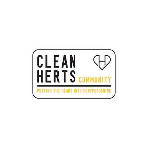

Trade Mark Journal No.2025/020 16 May 2025
UK00004196692 29 April 2025 (25,35,36,41)

- Class 25
- Clothing; footwear; headwear; casualwear; childrenswear; loungewear; menswear; nightwear; outer clothing; parkas; rainwear; robes; scarfs; sportswear; tee-shirts; tracksuit bottoms; tracksuit tops; clothing for leisure wear.
- Class 35
- Advertising; business management, organisation and administration; office functions; arranging and conducting of promotional events; arranging promotion of charitable fundraising events; promoting philanthropic services; information and advisory services relating to any of the aforesaid.
- Class 36
- Fundraising; fundraising services; arranging fundraising; charitable fundraising services; arranging business fundraising activities; charitable fundraising; charitable fundraising by means of entertainment events; providing information relating to charitable fundraising; organising of charitable collections; fundraising and financial sponsorship; arranging of finance for sporting, cultural and entertainment projects; financial sponsorship of entertainment activities; information and advisory services relating to any of the aforesaid.
- Class 41
- Education; providing of training; entertainment; sporting and cultural activities; advisory services relating to the organisation of sporting events; arranging of sporting events; coaching in the field of sports; conducting of live sports events; conducting of sports competitions; cultural and sporting activities; education, entertainment and sports; educational and training services relating to sport; entertainment provided during intervals of sporting events; entertainment services relating to sport; entertainment, sporting and cultural activities; operation of sports camps; organisation of events for cultural, entertainment and sporting purposes; organisation of sporting events and competitions; organisation of sports tuition; production of sporting events; providing facilities for sporting events, sports and athletic competitions and awards programmes; provision of sporting competitions; provision of sporting events; rental of sports grounds; services for the organisation of sports events; sport camp services; sporting and cultural activities; sports and fitness; sports coaching services; sports tuition, coaching and instruction; providing electronic publications (not downloadable); providing on-line videos (not downloadable); arranging and conducting of educational events; organisation of educational events; arranging of sporting events; organising of sporting events; organising community sporting events; organising community cultural events; arranging and conducting of entertainment events for charitable fundraising purposes; arranging and conducting of educational events for charitable purposes; arranging and conducting of sports events for charitable purposes; arranging and conducting of live entertainment events for charitable purposes; information and advisory services relating to any of the aforesaid.
CLEAN HERTS COMMUNITY CIC
Representative: Level Law Ltd